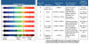

| Class | Temperature | Apparent color | Mass (solar masses) |
Radius (solar radii) |
Luminosity (solar luminosity) | Approximate main-sequence life span (years) | Hydrogen lines | % of all Main Sequence Stars |
|---|---|---|---|---|---|---|---|---|
| O | 30,000–60,000 K | blue | 64 | 16 | 1,400,000 | ~10 million | Weak | ~0.00003% |
| B | 10,000–30,000 K | blue white | 18 | 7 | 20,000 | ~100 million | Medium | 0.13% |
| A | 7,500–10,000 K | white | 3.1 | 2 | 40 | ~1 billion | Strong | 0.6% |
| F | 6,000–7,500 K | white | 1.7 | 1.4 | 6 | ~5 billion | Medium | 3% |
| G | 5,000–6,000 K | yellowish white | 1.1 | 1.1 | 1.2 | ~10 billion | Weak | 7.6% |
| K | 3,500–5,000 K | yellow orange | 0.8 | 0.9 | 0.4 | ~50 billion | Very weak | 12.1% |
| M | 2,000–3,500 K | orange red | 0.4 | 0.5 | 0.04 | ~100 billion | Very weak | 76.45% |
| Symbol | Class of Star | Example |
|---|---|---|
| I | Supergiants | Betelgeuse, Antares |
| II | Bright giants | Canopus |
| III | Giants | Aldebaran |
| IV | Subgiants | Procyon |
| V | Main sequence | Sun, Sirius A |
| wd or D | White dwarfs | Sirius B |

| Property | How it is determined |
| Brightness | directly measured |
| Color | -Compare brightness in two different E&M spectrum bands. -Examine spectra of star |
| Temperature | Use color or spectra |
| Distance | -Directly measured via parallax -Indirectly measured via method of standard candles |
| Luminosity | -use brightness and distance -Eclipsing Binary: Use Temperature and Size |
| Radial Velocity | Doppler shift of spectral lines |
| Transverse Velocity | proper motion and distance |
| Rate of Spin | Doppler broadening of Spectral Lines |
| Size | -Luminosity and Temperature -directly measure in an Eclipsing Binary |
| Mass | -Use Kepler's 3rd Law in Binary System. -Infer from Luminosity and Temperature. -Infer from spectral lines. |
| Chemical Composition | Spectral Lines |
| Strength of Magnetic Field | Spectral Lines |
| Age | Main-Sequence Turn-off Point in a cluster |